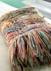

|
||
Premium Patterns Wintry Mix Mitts Love Bytes HawkeyeFree Patterns Kiddie Cadet Summerlin Ruffled Scarf Seamless DS Sock Simply Seamless Pouch Myriads of MushroomsExtras DIY Mitten Blocker Felt Patch Tutorial Yarn Dyeing Tutorial Needle Pouches Knitting Journal |
December 16, 2009 - Posted by Grace SchneblyAbsolutely Fabulous!Project Specs Wee! I'm so excited to finally have this finished. This throw has been sitting in my closet since summer, and it took me until now to finally wash it and add the fringe. I originally planned to give this to my grandma for her birthday earlier this year, but since I didn't get it finished in time, I just set it aside and pretty much forgot about it. I'm glad that I finally dug it back out because this will make the perfect Christmas gift for her! I think she'll love the colors and it is the perfect size to curl up under while reading a book or watching TV on the couch . I really enjoyed knitting this kit because it gave me a chance to work with some yarns I know I never would have otherwise. Each kit contains 5 different types of yarn adding to a total of 8 skeins. Most of the throw is knit in mohair (which I found out I am allergic to from knitting this!) and creates a light but really warm blanket. I opted to make the "Scallops" version, which seems to be the most popular version out there. There are four other versions you can make including a shawl and one that is crocheted. I got this kit along with two others (I know, I'm crazy) from an AMAZING destash on Ravelry which was too good to pass up! I was planning on knitting one for myself however my new found allergy means that my family might be seeing more throws in their Christmas gift future. The pattern was easy to knit but some of the yarns were a bit of a pain to work with. The hardest part was definitely the fringe, which was actually more time consuming than hard. I'd recommend giving yourself at least 2 days to get the fringe cut, washed, sorted, and attached. I cut each piece of fringe 13" to 14" and really like the finished length of the tassels. The instructions don't really tell you much about how long to make them, how much yarn to use per tassel, or how many tassels you'll need per side so that does take a while to figure out. I ended up using 104 tassels (52 on each end), each with a mix of 4 to 5 strands of yarn most of which was mohair. I decided not to use the left over Fandango in the tassels because it just falls apart and sheds like crazy. Washing the throw was a bit of a chore since it is fairly big and grew quite a bit once wet. Since I don't have tub big enough to soak it in, I filled up my washing machine with warm water on the smallest load size, added my wool wash, and then added my throw. Make sure that your machine is on pause though (I was really paranoid about this)!! After a good soak, I simply laid the throw out on my bed to dry. It doesn't need a real blocking with pins and wires. I washed the fringe separately in cut bundles and hung on clothes hangers to dry. I added the fringe to the throw after both were dry. Honestly I don't know how practical this throw is since it is dry clean only (especially after adding the fringe... I can't even imagine how much of a nightmare that would be if they all got wet). The mohair also sheds a bit so you don't want to give it as a baby blanket or anything like that! However, I think my grandma will appreciate it and use it a lot. |
   Recent ReviewsRecent Posts
 Our Favorites
|
| © 2007 KathrynIvy.com | ||
{kind=link}
{kind=link}
{kind=link}